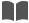
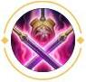

王者荣耀首页
>
英雄介绍
>
花木兰

技能介绍

长城巡守者
冷却值：0 消耗：0
被动：花木兰使用轻剑时，增加40点移动速度，普通攻击和技能伤害将会对敌方英雄叠加平衡印记，持续5秒；叠加满5层后将触发印记，造成200%物理加成点物理伤害，同时将该目标沉默并减少其50%移动速度，持续1秒；花木兰使用重剑时，普通攻击的基础攻击速度会降低，但会额外造成50%物理加成的物理伤害；并且释放技能过程中将处于霸体状态并减少40%所受到的伤害。
技能加点建议
主升
空裂斩
副升
旋舞之华
召唤师技能
终结/净化
英雄关系
最佳拍档
压制英雄
被压制英雄
最佳拍档
刘邦：花木兰是需要深入敌后的战士，自身硬度并不够，极易被集火秒杀。而有了刘邦的大招保护，可以有多种打法。不管是先手开团切后排，还是进行重剑控制，甚至用轻剑形态下对多个敌人打出沉默效果，都能获得很高的收益。

铭文搭配建议
异变
鹰眼
隐匿
物理攻击力+2
物理攻击力+0.9
物理攻击力+1.6
物理穿透+3.6
物理穿透+6.4
移速+1%
Tips：花木兰的铭文根据玩法不同有很多变化，推荐百穿玩法，攻击力和穿透可以提升花木兰的普攻和技能伤害，移速提升可以帮助花木兰支援队友，对于新手来说可以选择这套铭文轻松打出有效伤害。
出装建议
推荐出装一
推荐出装二
Tips：花木兰自身拥有霸体不怕控制的特性，让其可以选择影忍之足增强自身坦度。暗影战斧与名刀的冷却缩减属性，让花木兰可以更加灵活的调整位置追击敌人